4G 吃到飽 SEO 語意分析工具
全端實作專案 × 搜尋結果語意解析 × SEO決策輔助系統
專案簡介 | Project Overview
- 開發目的：自動抓取 Google 前 10 名文章並拆解關鍵實體，將搜尋結果量化分析
- 專案性質：全端實作專案，整合爬蟲、資料庫與前端視覺化分析。
我的開發角色 | Development Role
- 資料管線建構：使用 Google Apps Script 串接 SerpApi，自動抓取搜尋結果並寫入 Google Sheets。
- 語意分析設計：實作 entity 計數與主題分類（電信業者、資費、流量等）。
- 前端儀表板開發：以 Next.js + Recharts 建立互動式分析視覺化頁面。
核心系統說明 | Core Systems
- 數據爬取 (GAS)：串接 SerpApi 自動抓取關鍵字「4G 吃到飽」前 10 名Google文章，取代人工搜尋
- 雲端儲存：將分析數據存於 Supabase 資料庫
- 數據價值：透過 Entity 出現頻率分析「搜尋共識」，反推 Google 偏好的 SEO 內容模板
🔒 測試帳號：
帳號：user@example.com 密碼：123456系統功能展示 | System Showcase
系統架構 | System Architecture

( 提示：此圖為長格式流程，您可以上下滾動視窗查看完整細節 )
專案成果 | Results
- 決策輔助：可依據數據制定內容策略，提高文章排名機率。
- 系統化能力：完成從資料蒐集到視覺化的完整分析系統。
未來展望 | Future Roadmap
- AI SEO 寫作引擎：預計導入 n8n 與 OpenAI API，利用分析出的實體結構自動生成高排名潛力的文章。
- SEO 策略模板化：透過歷史數據反推，為不同關鍵字自動產出內容優化建議。
- 競爭對手監控：建立自動化追蹤機制，即時監控上榜網站的內容變動。